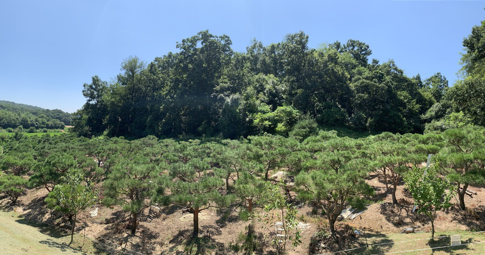
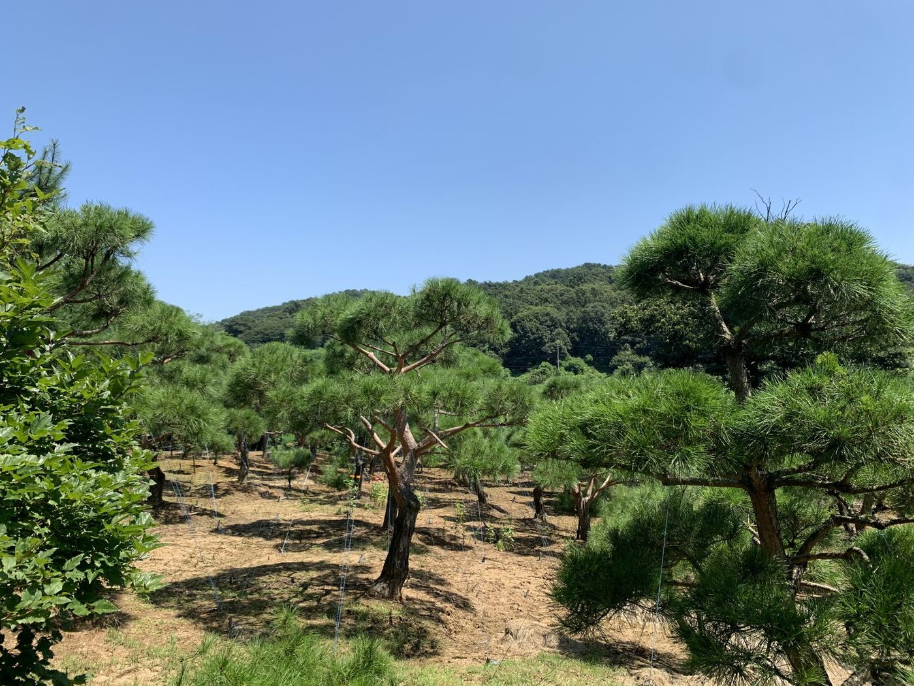
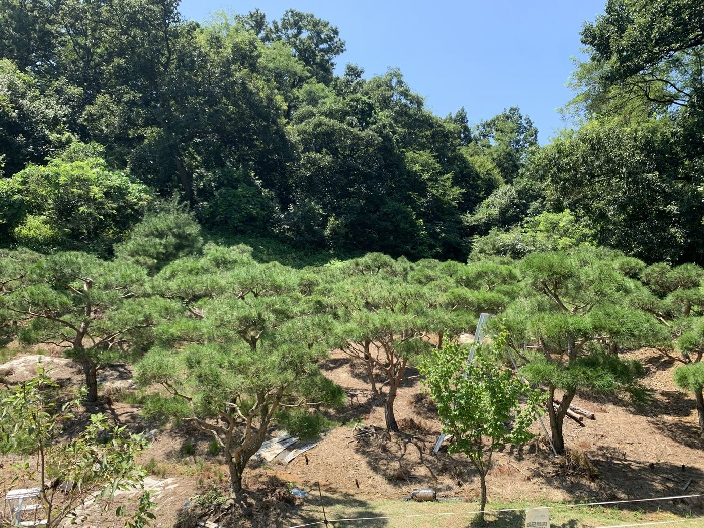

법원리농원 · 조경수 직거래
한 그루마다 코드가 있는 소나무밭
30년 넘게 소나무만 길러 온 농원의 나무를, 사진과 실측 규격으로 한 그루씩 확인하고 문의합니다. 가격은 실거래가로 공개합니다.

지금의 농원 둘러보기법원리농원
한 집안이 30년 넘게 소나무만 길러 온 농원입니다. 밭에 찾아온 중간상이 부르는 값에 넘기던 나무를, 이제는 사는 사람이 직접 보고 고를 수 있게 한 그루씩 번호를 붙였습니다.
구역, 줄, 자리 순서로 붙은 코드 하나가 나무 한 그루입니다. 배치도에서 자리를 확인하고, 개체 페이지에서 사진과 실측 규격을 봅니다.
이달의 농원
지금 농원에서 볼 수 있는 것
필요한 나무 조건으로 찾기
수종과 크기, 수량을 고르면 조건에 맞는 나무만 보여드립니다.
자주 찾는 규격으로 바로 보기
조경 현장에서 많이 찾는 규격을 묶어 두었습니다. 누르면 해당 조건의 나무 목록으로 이동합니다.
"반송 20-28", "느티나무 R15 이상 10주"처럼 말하듯 적어도 됩니다.
실거래 시세
전체 시세 보기
가격을 감추지 않습니다
실제 성사된 거래만 집계합니다. 호가는 넣지 않습니다.
거래는 이렇게 진행됩니다
문의부터 정산까지 플랫폼 안에서 끝납니다.
01
나무 고르기
배치도나 조건 검색으로 나무를 고르고 개체 코드를 확인합니다.
02
구매 문의
코드나 조건을 첨부해 문의하면 농원이 가능 여부와 견적을 답합니다.
03
현장 확인과 굴취
원하시면 현장에서 나무를 확인하고, 인근 굴취·운반 업체 견적을 함께 받습니다.
04
안전 정산
대금은 플랫폼이 보관했다가 인수 확인 후 정산합니다.
거래 가능
전체 보기
지금 거래할 수 있는 나무
어느 쪽이신가요?
나무를 사는 사람, 키우는 사람, 옮기는 사람이 한자리에 있습니다.
